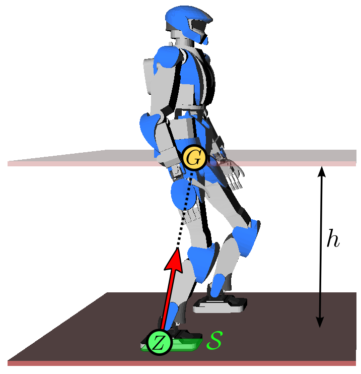
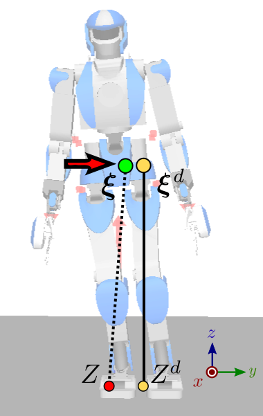

Walking had been realized on biped robots since the 1970s and 1980s, but a
major stride in the field came in 1996 when Honda unveiled its P2 humanoid
robot which would later become
ASIMO. It was already capable of walking, pushing a cart and climbing stairs. A key point in the design of P2 was its
walking control based on feedback of the zero-tilting moment point (ZMP). Let us look at the working
assumptions and components behind it.
If this is your first time reading this page, I warmly advise you watch this
excellent documentary from the NHK on ASIMO. It does a good job at
explaining some of the key concepts that we are define more formally below.
Linear inverted pendulum model
The common model for (fixed or mobile) robots consists of multiple rigid bodies
connected by actuated joints. The general equation of motion for such a system are high-dimensional,
but they can be reduced using three working assumptions:
- Assumption 1: the robot has enough joint torques to realize its motions.
- Assumption 2: there is no angular momentum around the center of mass (CoM).
- Assumption 3: the center of mass keeps a constant height.
Assumptions 2 and 3 explain why you see the Honda P2 walk with locked arms and
bent knees. Under these three
assumptions, the equations of motion of the walking biped are reduced to a
linear model, the linear
inverted pendulum:
p¨G=ω2(pG−pZ)where ω2=g/h, g is the gravity constant, h is
the CoM height and pZ is the position of the zero-tilting moment
point (ZMP). The constant
ω is called the natural frequency of the linear inverted
pendulum. In this model, the robot can be seen as a point-mass concentrated at
G resting on a massless leg in contact with the ground at Z.
Intuitively, the ZMP is the point where the robot applies its weight. As a
consequence, this point needs to lie inside the contact surface S.

To walk, the robot shifts its ZMP backward, which makes its CoM accelerate
forward from the above equation (intuitively, walking starts by falling
forward). Meanwhile, it swings its free leg to make a new step. After the swing
foot touches down on the ground, the robot shifts its ZMP to the new foothold
(intuitively, it transfers its weight there), which decelerates the CoM from
the equation above. Then the process repeats.
Now that we have a model, let us turn to the questions of planning and control.
Walking is commonly decomposed into two sub-tasks:
- Walking pattern generation: generate a reference CoM-ZMP trajectory,
assuming no disturbance and a perfect model.
- Walking stabilization: track at best this reference trajectory, using
feedback control to reject disturbances and model errors.
Walking pattern generation
The goal of this component is to generate a CoM trajectory pG(t)
whose corresponding ZMP, derived by:
pZ=pG−ω2p¨Glies at all times within the contact area S between the biped and
its environment. If the robot is in single support (i.e. on one foot), this
area corresponds to the contact surface below the sole. If the robot is in
double support (two feet in contact) and a flat floor, it corresponds to the
convex hull of all ground contact points. (If the ground is uneven or the robot
makes other contacts (for instance leaning somewhere with its hands), the
multi-contact ZMP area can
be defined, but its construction is a bit more complex.)
DCM trajectory generation
Another method (actually not incompatible with the latter) is to decompose the
second-order dynamics of the LIPM into two first-order systems. Define
ξ as follows:
ξ=pG+ωp˙GThe dynamics of the LIPM can then be rewritten as:
ξ˙p˙G=ω(ξ−pZ)=ω(ξ−pG)The interesting thing here is that the second equation is a stable system: it
has a negative feedback gain −ω on pG, or to say it
otherwise, if the forcing term ξ becomes constant then
pG will naturally converge to it. The point ξ is known
as the instantaneous capture point (ICP). The other equation remains unstable:
the capture point ξ always diverges away from the ZMP
pZ, which is why ξ is also called the divergent
component of motion (DCM). The name instantaneous capture point comes from
the fact that, if the robot would instantaneously step on this point
∀t≥t0,pZ(t)=ξ, its CoM would naturally come to
a stop (be "captured") with pG(t)→ξ as t→∞.
As the CoM always converges to the DCM, there is no need to take care of the
second equation in the dynamic decomposition above. Walking controllers become
more efficient when they focus on controlling the DCM rather than both the CoM
position and velocity: informally, no unnecessary control is "spent" to control
the stable dynamics. Formally, controlling the DCM maximizes the basin of
attraction of linear feedback
controllers. Walking pattern generation can then focus on producing a
trajectory ξ(t) rather than pG(t). Since the equation
ξ˙=ω(ξ−pZ) is linear, this can be done using
geometric or analytic solutions. These DCM trajectory generation
methods power walking pattern generation for ASIMO, IHMC's Atlas or TORO
humanoid robots.
Now that we have a reference walking trajectory, we want to make the real robot
execute it. Simple open-loop playback won't work here, as we saw that the
dynamics of walking are naturally diverging (walking is a "controlled fall").
We will therefore add feedback to it.
Walking stabilization
In 1996, the Honda P2 introduced two key developments: on the hardware side, a
rubber bush added between the ankle and the foot sole to absorb impacts and
enable compliant control of the ground reaction force, and on the software
side, feedback control of the ZMP. Using the terminology from ASIMO's balance
control report, this feedback law
can be expressed using the DCM
ξ˙=ξ˙d+kξ(ξd−ξ)where ξd is the desired DCM from the walking trajectory. Given the
equation above where ξ˙=ω(ξ−pZ), this
feedback law can be rewritten equivalently in terms of the ZMP:
pZ=pZd+kz(ξ−ξd)where kZ=1+kξ/ω, pZd is the desired ZMP
from the walking trajectory and pZ is the ZMP controlled by the
robot using foot force control. For position-controlled robots such as HRP-2 or
HRP-4, foot force control can be realized by damping control of ankle joints,
see for instance Section III.D of the reference report on HRP-4C's walking
stabilizer. This report is in
itself an excellent read and I warmly encourage you to read it if you want to
learn more about walking stabilization: every section of it is meaningful.

What happens with this control law? Imagine for instance that, while playing
back the walking trajectory, the robot starts tilting to its right for some
reason (umodeled dynamics, tilted ground, ...). As a consequence, the lateral
coordinate ξy of the DCM will become lower than ξd. Then,
as a result of the feedback law above, the ZMP will shift toward yZ<yZd, generating a positive velocity
ξ˙y=ω(ξy−yZ)=ξ˙yd+kξ(ξyd−ξy)on the DCM (red arrow on the figure to the right) that brings it closer to the
desired one. Hand-wavingly, the robot is tilting its feet to the right in order
to push itself back to its left. There is a bit more to this because the way
the feet tilt should be coordinated, which leads to the wrench distribution and
whole-body admittance control
sub-systems, but let's stop our overview here.
To go further
Is that it? Well, yes, at least for an overview of the ZMP feedback approach.
The main point I didn't mention above is called state observation: in this
instance, how to estimate the CoM position and velocity from sensory measurements. On
walking control itself, you can check yout the nice Lecture on Walking Motion
Control (2013) given by
Pierre-Brice Wieber.
Alternatives to the ZMP
The approach we have outlined here is the historically successful one based on
ZMP feedback; alternative methods are plenty. For instance, is used by
roboticist and YouTuber Dr.Guero developed upper body vertical control to walk the PRIMER-V7 hobby humanoid. This method
relies on upper-body rather than ankle motions, and is not based on direct ZMP
feedback.
Source code
Source code is a great way to close knowledge gaps left out by research papers.
For a step-by-step introduction, you can head to the prototyping a walking
pattern generator
tutorial which is entirely in Python. For working code used on actual robots,
you can check out:
Discussion
You can subscribe to this Discussion's atom feed to stay tuned.
Feel free to post a comment by e-mail using the form below. Your e-mail address will not be disclosed.